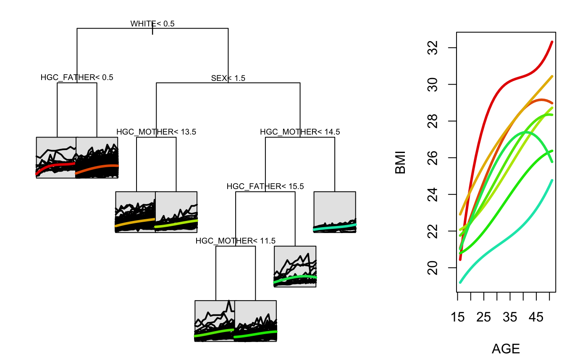

Builds a regression tree for longitudinal or functional data using the spline projection method. The underlying tree building process uses the rpart package, and the splinetree object is an rpart object with additional stored information. The parameters df, knots, degree, intercept allow for flexibility in customizing the spline basis used for projection. The parameters nGrid and gridPoints allow for flexibility in the grid on which the projection sum of squares is evaluated. The parameters minNodeSize and cp allow for flexibility in controlling the size of the final tree.
splineTree(splitFormula, tformula, idvar, data, knots = NULL, df = NULL, degree = 3, intercept = FALSE, nGrid = 7, gridPoints = NULL, minNodeSize = 10, cp = 0.01)
| splitFormula | Formula specifying the longitudinal response variable and the time-constant variables that will be used for splitting in the tree. |
|---|---|
| tformula | Formula specifying the longitudinal response variable and the variable that acts as the time variable. |
| idvar | The name of the variable that serves as the ID variable for grouping observations. Must be a string. |
| data | dataframe in long format that contains all variables specified in the formulas. |
| knots | Specified locations for internal knots in the spline basis. Defaults to NULL, which corresponds to no internal knots. |
| df | Degrees of freedom of the spline basis. If this is specified but the knots parameter is NULL, then the appropriate number of internal knots will be added at quantiles of the training data. If both df and knots are unspecified, the spline basis will have no internal knots. If knots is specified, this parameter will be ignored. |
| degree | Specifies degree of spline basis used for projection. |
| intercept | Specifies whether or not the set of basis functions will include the intercept function. Defaults to FALSE, which means that the tree will split based on trajectory shape, ignoring response level. |
| nGrid | Number of grid points to evaluate projection sum of squares at. If gridPoints is not supplied, this argument will be used and the appropriate number of grid points will be placed at equally spaced quantiles of the time variable. The default is 7. |
| gridPoints | Optional. A vector of numbers that will be used as the grid on which to evaluate the projection sum of squares. Should fall roughly within the range of the time variable. |
| minNodeSize | Minimum number of observational units that can be in a terminal node. Controls tree size and helps avoid overfitting. Defaults to 10. |
| cp | Complexity parameter passed to the rpart building process. Controls tree size. Defaults to the rpart default of 0.01. |
An rpart object with additional splinetree-specific information stored in model$parms. The important attributes of the rpart object include model$frame, model$where, and model$cptable. model$frame holds information about each node in the tree. The ith entry in model$where tells us which row of model$frame describes the node that the ith individual in the flattened dataset falls into. model$parms$flat_data holds the flattened dataset that was used to build the tree. model$cptable displays the complexity parameters that would be needed to prune the tree to various desired sizes. Apart from holding the flattened dataset, model$parms holds the boundary knots and the internal knots of the spline basis used to build the tree. These are sometimes important to recover later.
nlsySample_subset <- nlsySample[nlsySample$ID %in% sample(unique(nlsySample$ID), 500),] splitForm <- ~HISP+WHITE+BLACK+HGC_MOTHER+HGC_FATHER+SEX+Num_sibs tree1 <- splineTree(splitForm, BMI~AGE, 'ID', nlsySample_subset, degree=3, intercept=TRUE, cp=0.005) stPrint(tree1)#> n= 500, #> #> node), split, n , coefficients #> * denotes terminal node #> #> 1) root, 500, (21.31696, 4.166258, 7.711438, 7.068400) #> 2) WHITE< 0.5, 252, (21.39483, 4.687439, 9.170001, 7.671418) #> 4) Num_sibs< 3.5, 108, (21.86173, 5.012240, 8.435603, 9.337205) #> 8) HGC_FATHER< 11.5, 47, (21.71648, 7.578891, 9.874441, 10.498810) #> 16) Num_sibs< 1.5, 16, (20.59042, 7.764852, 5.394127, 11.158280)* #> 17) Num_sibs>=1.5, 31, (22.29767, 7.482911, 12.186860, 10.158430) #> 34) HGC_FATHER< 7.5, 14, (21.93419, 2.724053, 10.829330, 5.553413)* #> 35) HGC_FATHER>=7.5, 17, (22.59701, 11.401970, 13.304830, 13.950800)* #> 9) HGC_FATHER>=11.5, 61, (21.97364, 3.034658, 7.326991, 8.442199)* #> 5) Num_sibs>=3.5, 144, (21.04466, 4.443838, 9.720800, 6.422078) #> 10) HGC_MOTHER< 9.5, 68, (20.09657, 7.593267, 9.866433, 8.581839) #> 20) HGC_MOTHER< 5.5, 30, (17.82749, 11.662080, 6.643965, 11.122680)* #> 21) HGC_MOTHER>=5.5, 38, (21.88795, 4.381045, 12.410490, 6.575911)* #> 11) HGC_MOTHER>=9.5, 76, (21.89294, 1.625928, 9.590496, 4.489660)* #> 3) WHITE>=0.5, 248, (21.23784, 3.636672, 6.229350, 6.455657) #> 6) SEX< 1.5, 127, (22.23721, 4.431730, 5.717419, 6.443561) #> 12) HGC_MOTHER< 15.5, 115, (22.47111, 4.420602, 5.851314, 6.276248)* #> 13) HGC_MOTHER>=15.5, 12, (19.99567, 4.538375, 4.434258, 8.046976)* #> 7) SEX>=1.5, 121, (20.18892, 2.802189, 6.766666, 6.468352) #> 14) Num_sibs< 5.5, 106, (19.99264, 3.084804, 6.142535, 6.684741)* #> 15) Num_sibs>=5.5, 15, (21.57596, 0.805043, 11.177190, 4.939205)*stPlot(tree1)